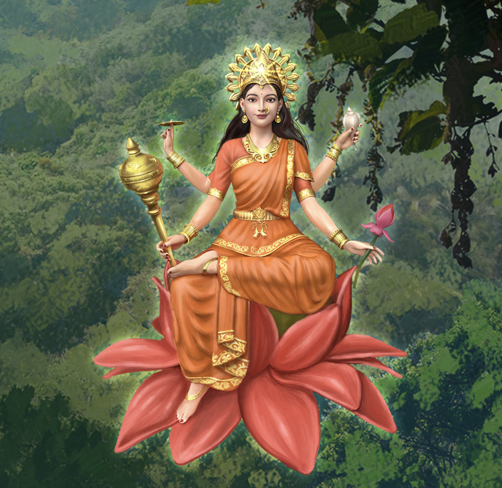

Day 9: Maa Siddhidatri
19 October · Selfishness and lack of purpose → Selfless service, wisdom and fulfilment

Selfishness and lack of purpose → Selfless service, wisdom and fulfilment
Understanding the Weakness
Selfishness arises when we focus only on our own needs, achievements or recognition without considering how our choices affect others. A lack of purpose may leave us focused on routine obligations, possessions or personal achievements without asking how we can contribute meaningfully. Maa Siddhidatri represents spiritual accomplishment and divine grace, inspiring us to dedicate our abilities and growth to the welfare of others.
Purification Process
- Recognise: Notice where your decisions focus only on personal benefit.
- Understand: Reflect on the impact your actions have on your family, colleagues and community.
- Release: Let go of the need for constant praise, recognition or reward for every good deed.
- Replace: Practise selfless service, generosity, gratitude and purposeful living.
Journal Reflection
- How do my abilities and achievements benefit others?
- Do I help only when I expect something in return?
- What values do I want my life to represent?
Perform one act of service without seeking recognition. It may be listening to someone, helping a person in need, sharing knowledge or offering your time.
“May my thoughts, words and actions serve the highest good. May I become an instrument of love, wisdom and service.”
My Navratri Reflection Journal
On the final evening, spend a few minutes reviewing all nine days. Write a sentence for each day. You can also use these questions for group sharing at the centre.
- Anger → Patience: One situation where I responded more calmly.
- Fear → Courage: One fear I faced or one brave step I took.
- Greed → Contentment: One blessing I appreciated or shared.
- Jealousy → Appreciation: One person whose success I celebrated.
- Ego → Humility: One moment when I listened or admitted a mistake.
- Attachment → Acceptance: One thing I released or accepted.
- Negativity → Discipline: One habit or task I improved.
- Resentment → Forgiveness: One emotional burden I began to process.
- Selfishness → Service: One action I took for another person's well-being.
All Nine Weaknesses Transformed into Virtues
Closing Prayer to the Divine Mother
Divine Mother, through Your nine sacred forms, guide me towards inner purification. Give me the awareness to recognise my weaknesses without judgment, the courage to face my fears, the patience to transform my reactions, and the wisdom to release thoughts and habits that no longer serve my highest good. May anger become patience, fear become courage, greed become contentment, jealousy become appreciation, ego become humility, attachment become acceptance, negativity become discipline, resentment become forgiveness, and selfishness become selfless service. May my thoughts become clearer, my emotions more balanced, my communication more compassionate and my actions more meaningful. May I carry the blessings of Navratri into my daily life and become a better human being, a source of harmony in my relationships and an instrument of peace, love and service to all. Jai Mata Di! Jai Maa Durga! 🌺🙏